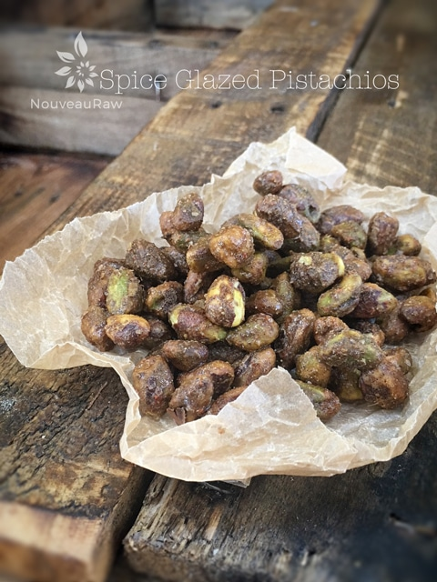

Spice Glazed Pistachios

raw / vegan / gluten-free
Pistachios… the other white nut. Well, once you remove the shell and the green skin. Do you remember back when they use to dye pistachios red?
Pistachio importers would dye the nuts red (and sometimes green) in order to hide the imperfections. There was no sneaking around when eating those, the red-stained fingers were always a dead giveaway. Thank goodness we don’t have to deal with Red Dye #40 pistachios anymore!
We know that these nuts have great nutrient levels in them so right now I want to focus on, “Did you know!” because learning stuff like this always amazes me. I hope it does you too! So, did you know that… Pistachios are related to the mango fruit? Now I know why I am “nuts” about mangos. (haha)
Pistachios grow in heavy grape-like clusters surrounded by a fleshy hull. When they ripen in late summer or early autumn, the pistachio kernel fills inside the shell so vigorously that it splits the shell.
Pistachio trees are wind-pollinated, with one male tree producing enough pollen for 25 nut-bearing females. Female trees produce their first nuts at about age five and can bear fruit for up to 200 years. For harvesting the trees, they require about 1,000 hours of temperatures at 45 degrees F or below to provide a good production.
Bob and I are always about recycling and reusing, so I did a little research on what a person could do with the empty shells. Here are just a few ways. They are great for starting fires in your fireplace. Collect them in a decorative basket and when you are ready to start the fire, just grab a handful. Start them with a little-crumpled paper, just as you would kindling. Another great way to use them is to line the bottom of pots containing houseplants, for drainage and retention of soil for up to two years.
Now, on to the recipe. I created this recipe as a component to be used with the Spiced Pistachio Brigadeiro Truffles, and I was just going to list the recipe along with that post but after witnessing Bob sneak away about 1/2 of them before I even got a chance to use them for the truffles, I knew this would be a great snack to have on hand. They are sweet, savory, and have a hint of heat to them. A perfect combination if you ask me… or heck, ask Bob, he ate most of them. (hehe)
Ingredients:
yields 1 cup
- 1 cup pistachios, soaked
- 2 Tbsp maple syrup
- 1 tsp ground coriander
- 1/2 tsp ground cumin
- 1/4 tsp ground Ceylon cinnamon
- 1/4 tsp ground ginger
- 1/4 tsp cayenne
- 1/4 tsp Himalayan pink salt
Preparation:
- Soak, drain, and rinse the pistachios, place in a small bowl or preferably, a ziplock bag.
- Add the maple syrup, close the bag, and shake until all the pistachios are covered in sweetener.
- In another ziplock bag, combine the; coriander, cumin, cinnamon, ginger, cayenne, and salt. Stir until all of the pistachios are well coated.
- Add the sticky coated nuts to the spice bag, close, and shake well.
- Do not add the spices to the bag with the sticky pistachios. Otherwise, the spices will want to stick to the sides of the bag and not the nuts.
- Transfer the nuts to the non-stick sheet that comes with the dehydrator. With a spoon, spread them out, don’t use your fingers or the spices will start sticking to you.
- Dry at 145 degrees (F) for 1 hour, then reduce to 115 degrees (F) for 8-10 hours or until dry.
- Once cooled to room temperature, store in an airtight container.
The Institute of Culinary Ingredients:
- To learn more about maple syrup by clicking (here).
- Why do I specify Ceylon cinnamon? Click (here) to learn why.
- What is Himalayan pink salt and does it really matter? Click (here) to read more about it.
Culinary Explanations:
- Why do I start the dehydrator at 145 degrees (F)? Click (here) to learn the reason behind this.
- When working with fresh ingredients it is important to taste test as you build a recipe. Learn why (here).
- Don’t own a dehydrator? Learn how to use your oven (here). I do however truly believe that it is a worthwhile investment. Click (here) to learn what I use.
© AmieSue.com